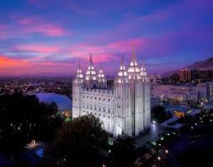
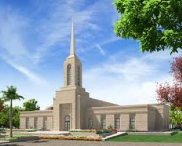
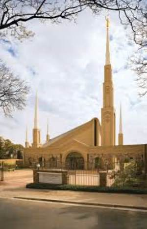
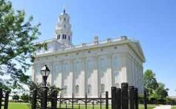
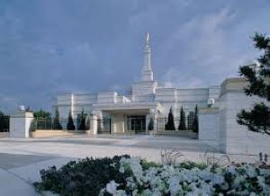

<!DOCTYPE html>
<html lang="en"></html>
<head>
    <meta charset="UTF-8">
    <meta name="viewport" content="width=device-width, initial-scale=1.0">
    <title>Temples- Nabugobero Devine Phoebe</title>
    <meta name="description" content="A webpage about different temples around the world, created by Nabugobero Devine Phoebe.">
    <meta name="author" content="Nabugobero Devine Phoebe">

 <link rel="stylesheet" href="styles/base.css">
 <link rel="stylesheet" href="styles/base.css">


</head>
    <body>
    <header>
        <h1>Temples</h1>
        <nav>
            
                <a href="index.html">Home</a>
                <a href="old.html">Old</a>
                <a href="new.html">New</a>
                <a href="large.html">Large</a>
                <a href="small.html">Small</a>

            
        </nav>
    </header>
    </body>

    <main>

        <h2>Temples of The Church of Jesus Christ of Latter-day Saints</h2>

        <section class="card">
            <h3>Salt Lake Temple</h3>
            
            <p>The Salt Lake Temple is the largest and most iconic temple of The Church of Jesus Christ of Latter-day Saints. It is located in Salt Lake City, Utah, and was dedicated in 1893. The temple features six spires and intricate stonework, making it a symbol of faith and devotion for members of the church.</p>

            <h4>Nairobi Kenya Temple</h4>
            
            <p>The Nairobi Kenya Temple is the first LDS temple in East Africa and the ninth in Africa, located in the Mountain View neighborhood (13646/4, Hinga Road, Off Waiyaki Way). Dedicated by Elder Ulisses Soares on May 18, 2025, the facility serves a growing membership, featuring local Kenyan-inspired, savanna-toned design, and is open for ordinances.

                <h5>Johannesburg South Africa Temple</h5>
                
                <p>The Johannesburg South Africa Temple is a temple of the Church of Jesus Christ of Latter-day Saints located in Parktown, Johannesburg, South Africa. The intent to construct the temple was announced by church president Spencer W. Kimball in April 1981.</p>
                
                <h6>Nauvoo Temple</h6>
                
                <p>Built amidst intense opposition in Illinois. Saints worked diligently to finish it before fleeing, with the building later destroyed by arson and a tornado.</p>
                
                <h7>Oklahoma City Oklahoma Temple</h7>
                
                <p>The Oklahoma City Oklahoma Temple is the 95th operating temple of the Church of Jesus Christ of Latter-day Saints and the first built in the state of Oklahoma. Located in Yukon, a suburb of Oklahoma City, the temple was announced on March 14, 1999, and at the time of its completion served Latter-day Saints in region </p>
                


        </section>
    </main>

    <footer>
        <p>&copy; 2024 Temples. All rights reserved.</p>
    </footer>